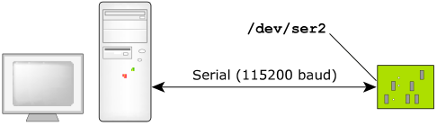
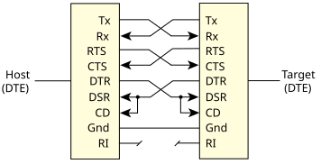

pdebug devicename[,baud]
This indicates the target's communications channel (devicename) and specifies the baud rate (baud).
pdebug /dev/ser2,115200

The QNX OS target requires a supported serial port. The target is connected to the host using either a null-modem cable, which allows two identical serial ports to be directly connected, or a straight-through cable, depending on the particular serial port provided on the target. The null-modem cable crosses the Tx/Rx data and handshaking lines. Most computer stores stock both types of cables.
